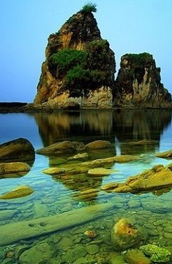

Pariwisata Indonesia
merupakan sektor ekonomi penting di Indonesia. Pada tahun 2009, pariwisata menempati urutan ketiga dalam hal penerimaan devisa setelah komoditi minyak dan gas bumi serta minyak kelapa sawit.[1] Berdasarkan data tahun 2016, jumlah wisatawan mancanegara yang datang ke Indonesia sebesar 11.525.963 juta lebih atau tumbuh sebesar 10,79% dibandingkan tahun sebelumnya.Kekayaan alam dan budaya merupakan komponen penting dalam pariwisata di Indonesia. Alam Indonesia memiliki kombinasi iklim tropis, 17.508 pulau yang 6.000 di antaranya tidak dihuni,[2] serta garis pantai terpanjang ketiga di dunia setelah Kanada dan Uni Eropa.[3] Indonesia juga merupakan negara kepulauan terbesar dan berpenduduk terbanyak di dunia.[4] Pantai-pantai di Bali, tempat menyelam di Bunaken, Gunung Rinjani di Lombok, dan berbagai taman nasional di Sumatra merupakan contoh tujuan wisata alam di Indonesia. Tempat-tempat wisata itu didukung dengan warisan budaya yang kaya yang mencerminkan sejarah dan keberagaman etnis Indonesia yang dinamis dengan 719 bahasa daerah yang dituturkan di seluruh kepulauan tersebut.[5] Candi Prambanan dan Borobudur, Toraja, Yogyakarta, Minangkabau, dan Bali merupakan contoh tujuan wisata budaya di Indonesia. Hingga 2010, terdapat 7 lokasi di Indonesia yang telah ditetapkan oleh UNESCO yang masuk dalam daftar Situs Warisan Dunia.[6] Sementara itu, empat wakil lain juga ditetapkan UNESCO dalam Daftar Representatif Budaya Takbenda Warisan Manusia yaitu wayang, keris, batik dan angklung.[7]Berdasarkan data dari Badan Pusat Statistik, sebelas provinsi yang paling sering dikunjungi oleh para turis adalah Bali sekitar lebih dari 3,7 juta disusul, DKI Jakarta, Daerah Istimewa Yogyakarta, Jawa Timur, Jawa Barat, Sumatra Utara, Lampung, Sulawesi Selatan, Sumatra Selatan, Banten dan Sumatra Barat.[8] Sekitar 59% turis berkunjung ke Indonesia untuk tujuan liburan, sementara 38% untuk tujuan bisnis.[9] Singapura dan Malaysia adalah dua negara dengan catatan jumlah wisatawan terbanyak yang datang ke Indonesia dari wilayah ASEAN.[10] Sementara dari kawasan Asia (tidak termasuk ASEAN) wisatawan Tiongkok berada di urutan pertama disusul Jepang, Korea Selatan, Taiwan dan India.[10] Jumlah pendatang terbanyak dari kawasan Eropa berasal dari negara Britania Raya disusul oleh Belanda, Jerman dan Prancis.
Objek Wisata
Indonesia memiliki kawasan terumbu karang terkaya di dunia dengan lebih dari 18% terumbu karang dunia, serta lebih dari 3.000 spesies ikan, 590 jenis karang batu, 2.500 jenis moluska, dan 1.500 jenis udang-udangan.[28][29] Kekayaan biota laut tersebut menciptakan sekitar 600 titik selam yang tersebar dari Sabang hingga Merauke.[25] Raja Ampat di Provinsi Papua Barat adalah taman laut terbesar di Indonesia yang memiliki beraneka ragam biota laut[30][31] dan dikenal sebagai lokasi selam scuba yang baik karena memiliki daya pandang yang mencapai hingga 30 meter pada siang hari.[32] Hasil riset lembaga Konservasi Internasional pada tahun 2001 dan 2002 menemukan setidaknya 1.300 spesies ikan, 600 jenis terumbu karang dan 700 jenis kerang di kawasan Raja Ampat.[30] Bunaken yang terletak di Sulawesi Utara memiliki 25 titik selam dengan kedalaman hingga 1.556 meter.[33] Hampir 70% spesies ikan di Pasifik Barat dapat ditemukan di Taman Nasional ini.[33] Terumbu karang di taman nasional ini disebut tujuh kali lebih bervariasi dibandingkan dengan Hawaii.[34] Beberapa lokasi lain yang terkenal untuk penyelaman antara lain: Wakatobi, Nusa Penida, Karimunjawa, Derawan dan Kepulauan Seribu.[35].Terdapat 50 taman nasional di Indonesia, 6 di antaranya termasuk dalam Situs Warisan Dunia UNESCO.[36] Taman Nasional Lorentz di Papua memiliki sekitar 42 spesies mamalia yang sebagian besar hewan langka. Mamalia yang ada di kawasan ini antara lain: kangguru pohon, landak irian, tikus air, walabi, dan kuskus.

Sawarna Beach Banten

Mandala Wisata Wenara Wana Bali

Ulun Danu Beratan Bedugul Bali

Candi Prambanan Yogyakarta

Gili Trawangan Nusa Tenggara Barat